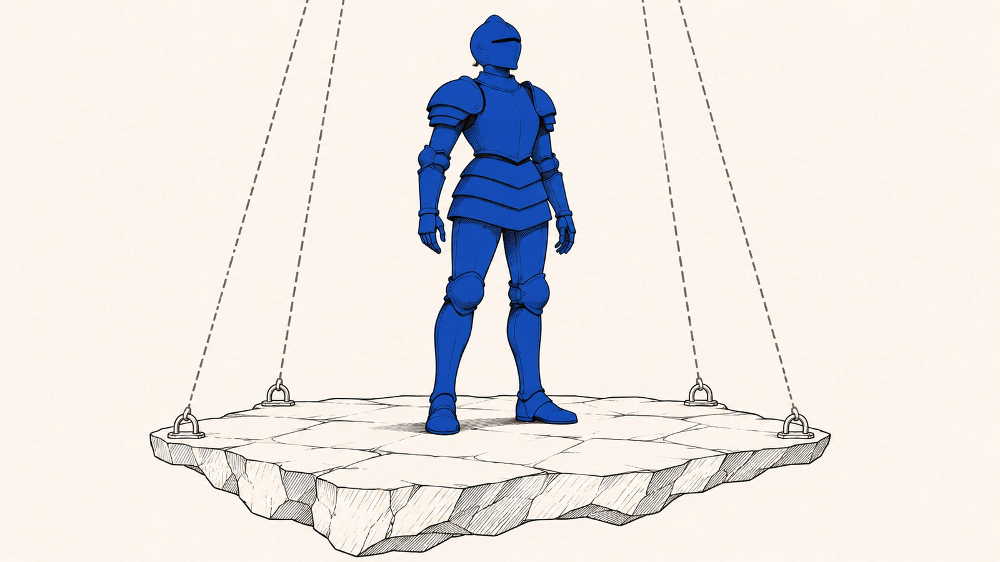

Aconteceu comigo
O que aconteceu com você?
Comece pelo que você viveu. Cada problema mostra o que guardar e o que pedir.
Cada peça da página diz o que é e de onde vem, quando o mouse passa sobre ela, no toque ou no foco do teclado. As caixas com números de página levam ao trecho exato do texto integral.

De onde vem
A travessia realizada neste trabalho começou pela constatação de que existe um tipo de consumo em que o sujeito imagina estar em terreno próprio, mas só se move dentro de um chão concedido, revogável e reconfigurável.p. 791
Você pagou com dinheiro de verdade. A skin está na sua conta, você usa nas partidas e os outros jogadores veem.
Parece sua, e em boa parte é.
Amanhã ela pode mudar de cara, perder o efeito de que você gostava ou desaparecer junto com a conta, sem que ninguém explique direito por quê.
De onde vem
A promessa de distinção permanece nominalmente na conta, mas deixa de encontrar, no mundo do jogo, o encaixe que conferia valor ao investimento de tempo, dinheiro e atenção.p. 104
Encerrada a conta, o usuário não terá mais acesso à conta, nem aos dados associados, nem ao Conteúdo Virtual, incluindo moeda do jogo, e a consequência é a perda definitiva sem reembolso quando o senhorio entende que havia motivop. 155
A quem você reclamaria, e reclamaria do quê?
Não é só nos jogos. Um assistente de inteligência artificial, uma loja virtual ou um aplicativo de trabalho podem funcionar do mesmo jeito, sempre que o que você usa depende de um ambiente que a empresa mantém, atualiza, reorganiza e controla.
De onde vem
O critério, portanto, não é a materialidade do suporte nem a nomenclatura empregada pelo fornecedor, mas a dependência estrutural da fruição em relação a um ambiente governado.p. 719
O ponto, aqui, não é reunir exemplos digitais sob uma mesma rubrica por mera afinidade tecnológica, nem sugerir que toda plataforma contemporânea reproduz, com idêntica intensidade, a mesma forma de vulnerabilidade, opacidade ou captura da fruiçãop. 755
Nesses lugares nada fica parado. Muitas mudanças são normais e fazem parte da vida do serviço. Outras não são, e o tempo, a atenção, a reputação e o dinheiro que você colocou ali não aparecem em nota fiscal nenhuma. Em que momento isso passou a parecer normal?
De onde vem
Ela permite reconhecer o óbvio sofisticado: serviços digitais contínuos mudam, mas não podem mudar de qualquer jeitop. 655
Atualizações ordinárias, curadoria regular, intervenções antiabuso e mudanças que não atingem o núcleo funcional do feixe de fruição permanecem no campo normal de execução e não constituem degradação relevante por definição.p. 430
Em que momento se naturalizou que tempo, atenção, reputação, acervo, vínculo e patrimônio podem ser capturados e desfeitos por desenho, sem que isso seja nomeado com o peso que merece e, sobretudo, sem gerar as consequências que deveria gerar?p. 21
Aconteceu comigo
Comece pelo que você viveu. Cada problema mostra o que guardar e o que pedir.
Quero entender
Onze partes, do clique de compra ao que a lei pode fazer por você.
Trabalho com Direito
Os mesmos problemas, tratados como doutrina para quem vai operar o regime.
Objeto Imaterial de Consumo (OIC) · Feixe de fruição governada · Antecipação hipercuratorial · Auditabilidade aberta · Equivalência de valor funcional · Ilícito de arquitetura · Lei da plataformaLex Plataformae · Teleologia abusiva · Vulnerabilidade semiótica
Tudo aqui foi escrito para ser entendido sem conhecimento jurídico, mas por baixo de cada frase existe o texto de onde ela saiu. A chave no canto da tela troca o modo de leitura. Doutrina traz a ficha e o guia para quem vai defender um direito, e Ciência mostra de onde saiu cada frase e como cada peça foi montada.
As nove epígrafes musicais da tese integram o método. Não provam o argumento e não servem de ornamento, porque cada uma antecipa em linguagem de arte o que o capítulo vai dizer em linguagem jurídica.
De onde vem
As epígrafes não comparecem como ornamento, nem como autoridade substitutiva do método científico, tampouco como prova empírica do argumento.p. 73
Cada abertura de capítulo condensa, em linguagem artística, o movimento específico que o desenvolvimento dogmático realizará em linguagem jurídica.p. 77